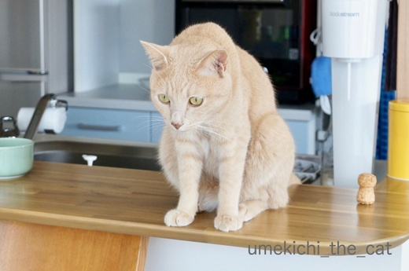
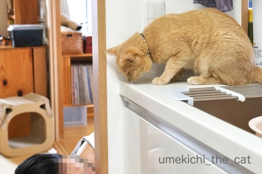
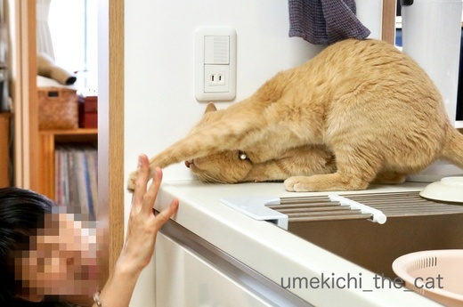

梅吉のガブおもてなし [梅吉]
昨日はくつしたにゃんさんが我が家に遊びに来てくれました＾＾
くつしたにゃんさんとはリュカさんを通じてお友達に。
我が家にいらっしゃるのは2回目です。

バルミューダでチーズトースト祭り！
もちろん昼飲みしますよ！！

梅吉さんも興味津々です（パンとチーズ大好き。あげませんけどw）
くつしたにゃんさんとは同じ年の生まれ。しかも！同じ誕生日であることが判明(・o・)
こんな偶然ってあるのですね・・・

梅吉さんはお土産をもらってたくさん遊んでもらいましたよ。
おかーさんとはしたことなかった遊び。
シンクの下から覗き込まれて〜



左ストレート決まりましたw

壁を有効利用して遊んでくれます。やっぱり猫飼っている人は遊び方が上手だなぁーＯ(≧▽≦)Ｏ
ちゃんと猫のツボを心得ておいでです＾＾

後ろから前からどっちから攻撃されるかわからないので身構える梅吉さん。

おもてなしのガブも決まりました(*>艸<)

くつしたにゃんさん宅の分身ちゃんずにもご挨拶できましたよー＾＾
めちゃ鼻くっつけてますwww

くつしたにゃんさんはこの本を届けがてら遊びに来てくれたのです。
この本は熊本地震を経験された獣医さんの実体験が元になっています。
よーく読まなくっちゃ！！
遊びに来てくれてありがとう＾＾
今度は玉子コロッケ（一緒に食べようと思ったのにお店が休みだった(꒦ິ⌑꒦ີ) ）
食べに来てねーヾ(*ΦωΦ)ﾉ
満足いくのがなかなか撮れなかったのですが、これならまずまずかな。
もともと白目がちなんですが夏になると一気に頻度が増す梅吉の白目。
（去年の一コマ）
日本の夏、真っ盛りです。

カフェオレ色の梅吉

梅吉 2023年8月10日 永眠


梅吉と出会った譲渡会

犬猫の理由なき殺処分ゼロ
妄想広告
UMEKICHI 光

爆発的に早い！
時々攻撃的！
Thanks to Mr.Boss365
爆発的に早い！
時々攻撃的！
Thanks to Mr.Boss365

梅吉様も愉しそうですし、御自身も
満足そうなお顔してますね(〃'∇'〃)
参考になりそうな本ですね(〃'∇'〃)
by middrinn (2018-07-19 13:48)
いやー、、、やばい★猫パンチと、猫かぷ♪★
うらやましい…(∩´∀`)∩
暑さ忘れれる♪ありです♪
by 猫毬 (2018-07-19 14:07)
こんにちは。
猫飼経験者は、不思議に「遊ぶの上手」ですね！！（⌒ー⌒）
ハズレの時もありますが・・・
猫飼いは、我を忘れて様々なテクニックを使います！！子供です？？
パンチに甘噛み？梅吉君！！楽しそうです！！満足だ寝！？(=^･ｪ･^=)
by Boss365 (2018-07-19 14:26)
この日、会社が休みだったらスカイプなり FaceTime なりで参加して
一緒に飲みたかったわ！！！
画面で一緒に乾杯くらいは出来たなあｗ
くつしたにゃんさんが楽しんでる様子が、めちゃめちゃ分かりますｗ
同じ誕生日とのこと、これからも仲良く飲んでください！
たまに混ぜてねｗ
by リュカ (2018-07-19 14:35)
今日の梅吉さんは白目しながら笑っていますね。楽しかったのでしょう。シンク横でおてて出しながらお顔は横になっちゃってるところが可愛いです~。
きっとくつしたにゃんさんのお家では、分身ちゃんたちに付いた梅吉さんの匂いにチェックが入ってますね。
by zombiekong (2018-07-19 14:37)
梅吉さんも楽しんでますね(#^.^#)
同じ年、同じ誕生日♪運命ですね♪
同じ猫飼いであるという共通もありますし
お話も弾んじゃいますね！
by きぃ (2018-07-19 15:14)
きゃあ～出た～おもてなしガブ♡
・・・何て愛に満ちたお土産の御本なのでしょう・・・うう・・・考えるだけで死にたくなるくらい、でもいつ起こるかわからない災害に、何と何とココロ強い・・・！！
by Ginger (2018-07-19 15:45)
バルミューダでのトースト祭りよいですね！
ふっくら焼けるみたいですね、梅吉さんも遊んで貰って大満足ですね(^ ^)
今日は福岡に来ていて、只今ANAラウンジで飲んだくれています（笑）
by ma2ma2 (2018-07-19 16:04)
梅吉さん、とっても楽しそうに遊んでもらってますねぇ(^O^)
「どこから手が出てくるのかわからないワクワク感がたまらない(^-^)」
って表情の梅吉さん、親愛のガブのドヤ顔がステキです＾＾
by ニッキー (2018-07-19 16:06)
ちぃ姉さん(^^)/←小さな抵抗
昨日はありがとうございました！！
とても楽しい時間を過ごす事が出来ました〜♪猫から酒から仕事から…様々なお話をさせて頂いて、そしてお誕生日が一緒だなんて！！親近感わくどころか溢れかえってます！！
前回はそんなお話にもならなかったし、まさかのまさかの展開に2人して「サブイボ」出ましたねw
次回の玉子コロッケも楽しみです☆
梅吉様、下僕とのお遊びはお気に召しましたでしょうか？嫌われてないといいのですが…又新しい遊びしましょうね！！
お鼻プチにじにじに感動した下僕です♪
梅吉はん、ウチの姉やんはひつこいやろ？嫌やったらガブッと一発お見舞いしたってや〜ウチが許すわ〜(=^ェ^=)b
by くつしたにゃん (2018-07-19 18:56)
昼飲み、今の時期は最高ですね！
梅吉さんもキラキラしていて大満足の様子がわかります(^^)
by kou (2018-07-19 19:02)
チーズトースト祭り！！いいな～。美味しそうだな～♪
昼飲み、贅沢だよ～～。
生年月日が一緒だなんて！なんだか双子ちゃんみたいでいいね(*^-^*)
その安心感？梅吉くん躊躇なくガブｗ
白目寝。幸せそうな寝顔((≧▽≦)私もそれくらいの脱力感で眠りたい～。
by emi (2018-07-19 19:05)
昼飲みか～いいなぁ。昼に飲むお酒って美味しいですよね。よくまわるし(#^.^#)
梅吉君楽しそうだわ～そうかそうやって遊ぶのか。ふむふむ。勉強になります～(^_^)/
by palpal (2018-07-19 19:38)
なんて素敵な昼飲みパーティ♪
梅吉さんもいつもと違う遊びでテンション上がってますね(*^▽^*)
横向き姿勢からの決死の猫パンチがかわいすぎる！
ニャンコがつなぐ不思議なご縁、なんだかゾクゾクしちゃいます。
「白目がち」って・・・(≧▽≦)
by ゆきち (2018-07-19 20:51)
梅吉さん、楽しんでますね〜
ハイタッチしているのかと思いました。
猫パンチだったのね（笑）
久しぶりの梅吉さんの白目（笑）
偶然が重なって良いご縁ですね〜
Amazonプライム情報ありがたや〜
早速、ウォッチリストに追加して、眠れぬ日々が続きそうです（笑）
by kiki (2018-07-19 22:36)
私も壁を使って、ユキとかくれんぼみたいな事します。
でも、ユキはじっと見つめるだけで反応しません。
二日に一回ぐらいします。
ユキに見つめられるだけでいいんです(^^;
by riverwalk (2018-07-19 22:41)
我が家も、バルミューダ党です！
（以前に記事にしましたが、蒸気が出なくなり、新品に交換）
バルミューダが来てから、更にパンが美味しくなりました！
by angie17 (2018-07-19 22:48)
なんておしゃれなランチタイム。
これはぜひ、カフェ風ベランダでやってほしかった！（笑）
チーズトーストのお写真はないのですね・・・(´・ω・`)
かくれんぼって、反応もそれぞれですよね。（通用しない子もいる^^;）
宇宙との交信中写真もバッチリですよ！
by Ja-Kou66 (2018-07-20 00:26)
この先生は空楽さんの主治医さんですね。
空楽さんもこの本を紹介されてたような？＾＾
一緒に避難したいところですが
12匹はねぇ・・・＾＾；
by ぽちの輔 (2018-07-20 06:48)
梅吉さん、強烈なネコパンチですにゃあ～！
100点にゃあ。
by ニコニコファイト (2018-07-20 07:22)
白いお皿がきれいに並んで美味しいお料理、チーズトースト祭り！
ステキなテーブルですね(^^)/
これで昼から飲めるなんて最高です。
くつしたにゃんさんとお誕生日が同じ！なかなか気の合う友人知人でいませんよ、これは絶対に出会うべくして出会った大切なお友達ですね。
梅吉ちゃんもいっぱい遊んで貰ってラブラブ気分だったことでしょう。
白目、かわいいぃ(^^♪
そういえば、うちの子の白目って見たことないなって思いました。
テーブルの上にあるお玉がのってるお料理はなんでしょう？と気になりました。きになっただけです。
by ake_i (2018-07-20 13:50)
あ！こんな本が出てるんですね。調べてみようっと。
どこにでも行ける猫たちじゃないから、災害になったら、心配だ〜☆
猫パンチのおもてなし、いいですにゃあ^ ^。
by nachic (2018-07-20 16:13)
おおお。梅吉さん、楽しそう♪ ^^)
by yes_hama (2018-07-20 23:44)
梅吉さん、お客さまを熱心におもてなし♪ エラいわ〜♪
ウチの猫どもは、もお、幻の猫になりますからね(^_^;
それにしても、梅吉さんの白目寝はスバラシイ♡
by のらん (2018-07-21 07:37)
梅吉さん遊んでとっても楽しそうですね。
そして皆さんでランチ美味しそう、楽しそうですね。
徳田先生わが家の主治医です。
今度ワンちゃんの本も出版されると言ってましたよ。
by 空楽 (2018-07-21 11:21)
middrinnさん＞
梅吉は楽しかったようですよー＾＾
いつもは夜中に一度は起こされるのに
この日は朝までぐっすりでした！
猫毬さん＞
猫ぱんちとガブならいつでも誰でもOKなんですよ。
ガブもちゃんと加減するので（そんなに）痛く無いから＾＾
暑気払いに如何でしょ♪
Boss365さん＞
下僕体質の人は猫に遊んでいただいている
猫より楽しんじゃっている人が多いですからー＾＾
梅吉も家族とは違う新鮮な遊びに楽しかったようですよ。
おもてなしのご褒美もねだられましたけどwww
リュカさん＞
ほんと！！参加して欲しかったわー＾＾
ハウンドドッグのフォルテッシモの話になって
んんん？と思って生年月日を聞いてみたら・・・
おばちゃん二人道の真ん中で「えーーーうそーーー！！」って
叫んじゃいましたよー( ´艸｀)
東京で、大阪でどっかでみんなで飲みましょうねー(๑˃̵ᴗ˂̵)و
zombiekongさん＞
そうそう＾＾白目寝笑いwww新境地開拓でしょうか。
体を横にしちゃう時ってすごく盛り上がっている時ですよねー。
ぱんちしてない時は体をくねくね右に左に横にしていました。
分身ちゃんたちは女の子。
梅吉は初めて嗅ぐ女子にの匂いに真剣そのもの、でした(*>艸<)
そういえばくつしたにゃんさんちでの反応、聞いてません。
どうだったんだろう・・・
きぃさん＞
同じ生年月日の人、私の人生で初めての出来事でした！
「夏休み中の誕生日ってさぁ・・・」という話でも
盛り上がりました＾＾
Gingerさん＞
はい＾＾梅吉、きっちりおもてなし出来ました！
本はまだチラ見段階なのですが色んな情報が盛りだくさんです。
「ペット」とという括りはあっても「ネコ」だけに焦点を当てた
この手の本はあまり多く無いと思うので
しっかり参考にしようと思っています＾＾
ma2ma2さん＞
バルミューダで焼くと外はカリッと中はふっくらと焼けます。
トーストも良いですがクロワッサンを温めると最高♪
おおお！今度は福岡ですか。やっぱり焼酎が充実なのかな？
ニッキーさん＞
そうなんです＾＾
ものすごーくワクワクしてもうどして良いかわからない！
みたいに体をもぞもぞしていましたw
ガブも上手に出来ました ( ´艸｀)
くつしたにゃんさん＞
おお！妹よwww
誕生日は本当にびっくりしましたね。
道の真ん中、結構大きな声で叫んだような気がします(*>艸<)
梅吉は遊んでもらって大満足。
この日は夜中に私を起こすこともなく朝までぐっすりでした＾＾
梅吉はすっかり心を許して次回は足ガブガブかもしれませんよー。
お覚悟を！！
kouさん＞
特別蒸し暑い日だったのでシュワっとしたのが（笑）
美味しかったでーす＾＾
ネコ好きな人が来てくれると梅吉も一緒に楽しめて
うれしいです！
emiさん＞
昼飲みのチーズトーストはいつもより更に美味しかったですよ＾＾
生まれて初めて出会った同じ生年月日の人
本当にびっくりしましたー！
有名人でもこれという人、思い当たらないし。
ちなみにおっとと私の父は同じ誕生日ですw
このところの熱帯夜続きでなかなか安眠できないよね。
にゃんこがぐっすり寝ているの見ると羨ましいです。。。
palpalさん＞
昼から、ってのが更に美味しさアップの決め手なのでしょうか(^_－)☆
その手があったか！というくつしたにゃんさんの遊び方
私がやっても不思議そうな顔されるだけでした；；
ゆきちさん＞
いつもと違う人、遊び、スペシャルな感じがするのでしょうか
盛り上がっていましたよー＾＾
ニャンコがつなぐご縁、本当に不思議です！
ニャンコって偉大だわー！！
kikiさん＞
横向き決死（笑）の猫ぱんちでした＾＾
生まれてから４◯年、初めて同じ誕生日の人に会いました！
関係ないですがおっとと私の父は同じ誕生日ですw
Amazonプライムあやふや情報大変失礼しましたm(_ _)m
気になって「dアニメストア」調べて見たのですが
ドコモが始めた配信サービスのようですね。
携帯キャリアがドコモでも割引等の特典は無し。
初回1ヶ月間無料視聴とのことですが
何日に申し込んでも申し込み月の月末までが無料視聴期間とのことです。
八月に入ったら申し込んじゃおうかしら・・・
もちろん継続は無しでwww
riverwalkさん＞
そうそう！一緒の時間を共有するのが大切ですよね＾＾
たとえユキちゃんが「一人で何やってんだろうw」
という目をして見つめていても・・・うそうそ！
きっと見つめながらわくわくする遊びなんですよ〜ヾ(*ΦωΦ)ﾉ
angie17さん＞
「バルミューダ」が壊れた件、記事見ました！！
確かに初めは面白くて張り付きながらじ〜〜〜っと見てましたが
最近は見てませんw
幸いうちのは2015年製、ちゃんと蒸気は出ていますよー＾＾
贅沢なことにバルミューダトーストにすっかり慣れて
美味しさの感動は薄れつつありますが
お客様に美味しいと褒めていただいて実力のほどを再確認しました。
Ja-Kou66さん＞
お外パン祭り！それもいいですねぇw
あのシェードの下に入ることは出来ないんですが
涼しくなったらやろうかしらー。
パンくずボロボロこぼしても気にならないし。
なにより梅吉に「わーわー」言われるうっとおしさがありません( ´艸｀)
夏場は宇宙との交信が俄然多くなります。
そのうちベランダにUFOが来るかしら・・・
にゃんこ星人だったら捕獲しますw
ぽちの輔さん＞
おお！空楽さんのブログをチェックしてきました！！
早速ご本人からのコメントもいただきましたよー。
ありがたや＾＾
この本、避難所でのあれこれだけじゃなく
被災した場合の在宅での過ごし方、車を一時的シェルターにする方法
も出てきて参考になるかなと思います。
（ペットを飼っていて）被災した方のコメントも参考になります＾＾
ニコニコファイトさん＞
渾身のおもてなし一撃をプレゼントしましたよー！
大変喜んでいただけました(*>艸<)
100点ありがとうございます！！
ake_iさん＞
誕生日が同じだと考えていることも似るんでしょうか。
笑っちゃうくらい同じ意見がたくさんありました＾＾
楽しい昼飲みでしたよー。
気に止められたのは、黒いお玉っぽいのが乗っているお皿かな？
ズッキーニをオリーブオイルで軽く焦げ目が付くくらいまで炒めて
卵と生クリームを合わせたものでスクランブルして
黒胡椒を思いっきり振った簡単な一品です。
じつは・・・
アボガドにレモンを振っておかかをふりかけた（そして醤油するだけw）
お酒のアテを考えてたんですがアボガドが全然熟してなくてゴム！
冷蔵庫にあったもので急遽作ったメニューだったのですが
美味しかったでーす＾＾
nachicさん＞
なかなか参考になる本だと思います！
ぜひぜひご覧になってみてください＾＾
うちも避難所での生活なんてとても出来そうにない猫なので
自宅でのサバイバルを目標にしておりますw
yes_hamaさん＞
写真で見ても楽しそうなのがわかりますよね！
梅吉も、くつしたにゃんさんも(^_－)☆
のらんさん＞
梅吉、片時も引っ込んでしまうことなく
（それはパンがあったからなんですがw）
ちゃんとお客様のおもてなしが出来ましたよー！！
今年の夏も立派に「白目」をお届けすることが出来ました ( ´艸｀)
空楽さん＞
遊ぶ相手が変わると新鮮なんでしょうか＾＾
とっても嬉しそうに楽しそうに遊んでいた梅吉ですw
ぽちの輔さんから徳田先生の患畜さんがいるよ、と
教えていただきました。
動物病院がペット同伴避難所になっているなんて
心強いですよね。
そういう病院が我が家の近くにもあれば安心だなぁ・・・
あ、避難所にはなりませんが梅吉の先生は良い先生ですよ(^_－)☆
この本を参考にして改めて自宅でのサバイブを想定して
色々準備をしようと思っています＾＾
by ちぃ (2018-07-21 15:28)
美味しそうなごちそうが並んでますね！
梅吉さん、のりのり♪
遊んでもらってぇ～のおもてなしのガブ＾o＾
誕生日が同じ？すごい！ そんなことってあるんですね～＾＾
徳田竜之介先生、テレビで見たことあります。
空楽さんところの主治医さんですね。
こんな動物病院があちこちにあったら！と願わずにはいられません＾＾
by sana (2018-07-21 19:39)
同じ猫ブロガーで誕生日まで一緒とは
運命的すぎますーっ！
ステキな時間になったようですねー(≧∀≦)
by よーちゃん (2018-07-22 16:23)
sanaさん＞
徳田先生はテレビにも出る方なんですね！
共感する獣医さんがたくさん出来て
災害時には臨時避難所になる病院が全国にたくさん出来ないかな・・・
よーちゃん＞
誕生日聞いた時びっくりしましたよー。
冗談言ってるのかって思いましたwそんなわけないのにww
by ちぃ (2018-07-23 15:52)